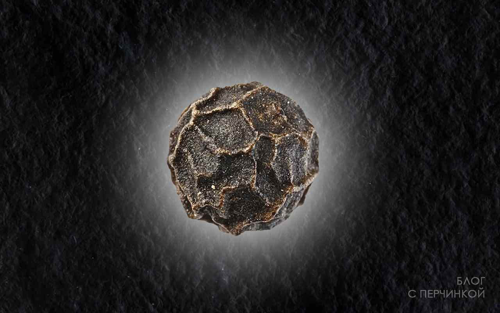
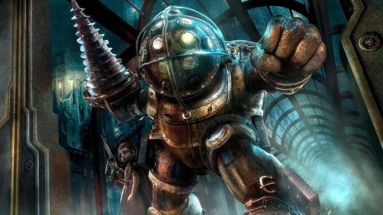

WebP — это формат файла, разработанный компанией Google в 2010 году. Его особенностью является продвинутый алгоритм сжатия,
позволяющий сократить размер картинки без видимых потерь в качестве.
WebP — невероятно полезный формат, потому что он предлагает и производительность, и функционал. В отличие от других форматов,
WebP поддерживает сжатие с потерями и без потерь, а также прозрачность и анимацию.
И даже с учетом этих функций WebP обеспечивает стабильно меньшие размеры файлов, чем его альтернативы. При сравнительном исследовании этих форматов изображений было обнаружено,
что изображения с потерями качества в WebP были в среднем на 30% меньше, чем JPG, а изображения без потерь качества — в среднем на 25% меньше, чем PNG.
JPEG
WEBP
|
|
|  |  |
PNG
Webp
|  |
Chrome,Firefox,Opera,Safari,Android браузер.